似曾相识～
识别文字连续阅读 · 原图附后
原始 PDF 不公开，本页展示捕获页面的截图。 识别文字按页序连续显示，全部原始截图附在文末，便于对照。文字由视觉转录整理，尚未经人工逐字核对，可能存在错字、漏字、漏行、顺序或断行错误。留言与作者回复仅限截图中可见的内容，不代表完整线上留言，也未据此推断留言总数。
OCR 识别提示（待核对）
- OCR/视觉转录文字，尚未逐字校对；可能错字、漏字、漏行，数字、姓名、表情、标点及断行也可能有误，请以截图为准。
- 这里只保留 PDF 已截到的正文、留言和作者回复；截图以外的留言不在此存档中。
- 未从截图推断留言总数或回复关系；手机界面文字也可能混入 OCR。
- 方括号中的表情说明是转录注释，原始表情请对照截图。
- 页面边界仅露出少量字形的重复行归到文字主体可见的相邻页；不推断缺失内容。
识别文字
文字按截图页序整理；页边重复行仅保留一次，原始 PDF 不公开。方括号中的表情说明为转录注释。
第 1 页对照原图
似曾相识～
原创 天玑 金渐成 2026年10月29日 09:46 美国
这几天，谷歌、微软、亚马逊这三大云巨头的财报，倍受瞩目。
说到底，市场是通过云巨头观察整个AI核心产业链的三大问题：一是随着AI投资规模持续扩大，能不能延续高增长？二是资本开支会不会进一步上调、加大？三是AI投资回报和落地等情况能不能达到预期。
微软公布财报，营收、利润、每股收益都超过市场预期：第一财季营收923亿美元，同比增长19%；营业利润459亿美元，同比增长21%；净利润366亿美元，同比
第 2 页对照原图
增长32%；每股收益4.92美元，同比增长32%。
云业务Azure单季收入331.7亿美元，同比增长48%；资本开支452亿美元，低于市场500亿美元的预期。
盘后，微软股价上涨2.9%，至546+美元，逼近历史新高。
微软自去年12月下跌至今，走势为“W”型，从520下跌至4月份的355美元附近，随后反弹至6月的464美元左右，然后再下跌至349美元，随后拉升至如今的546美元。
我微软操作得挺满意的，高位减仓，低位买入，反弹做T，随后低位又加仓，然后拿到现在，只在相对高位减了10%，还有90%持仓仓位没动。
同样操作的还有Meta，Meta更是波段套利的好目标，不过需要有技术的人适合做，普通人技术不过关，尽量少碰。
谷歌也发布财报，第三财季的营收1275.8亿美元，每股收益2.12美元，二者均低于市场预期。
第 3 页对照原图
股权投资浮亏87亿美元，主要是持有SpaceX、Anthropic的股权估值下跌。
谷歌云超预期，同比大增超100%，但市场在担心谷歌的自由现金流、利润率等。
盘后，谷歌暴跌10%，下探至290美元……
谷歌在380-400高点上时，我减仓了部分（历史文章都有记录），接下去准备看情况补一些回来。
谷歌这走势、这剧本有没有很熟悉？
当初Meta、微软都走过这条路，微软的走势参考上面所写，而Meta是冲高至790后一路下跌至525，随后拉升至680，再往下俯冲至520，最后拉回779+，最近又下跌至612美元。
对于这类个股的持仓，最好的是冲高后适当减仓，腾出资金和仓位，应对下跌时的机会。并在机会出现时，随着下跌层层阻击，梯次配置。
我个人以前是习惯7成底仓，3成做T。现在适当调整为约6成底仓，4成做T，接近黄金分割比例0.618。
第 4 页对照原图
看看明天亚马逊的财报怎么样，现在亚马逊还没有绽放，对于它，我给了更多的耐心。
投资这事挺有意思的，投资做得好和学习学得好，可以直接拿结果说话：
当别人想来抬杠或打压你时，你已经用前期的成功换取了让世界闭嘴听你说话的权利。
美股这段时间，科技巨头的财报、美联储议息、中期选举等，都会影响其走势。
不过，从过去的74年（1952年至今）历史规律来看，美股中期选举后6至12个月，全是正收益。
当然，投资不能刻舟求剑，更应该聚焦于当下的基本面。
…… ……
昨天给孩子们上历史，从西汉末年至东汉光武。“穿越者”王莽的屠龙少年终成恶龙，位面之子刘秀的如有神助。
第 5 页对照原图
聊着聊着就聊到了理想，我逗老三“长大后要不要去当官？”
他急忙反驳说“不要当官，很容易成收刮民脂民膏、贪污受贿的贪官，会被抓进去的，就督邮一样”。他最近又在看《三国演义》，对督邮被张飞绑在树上揍了一顿很有印象。
紧接着，他说长大后要做投资大佬，像××家的父亲（他班上同学，美国著名投资人）一样；实在不行，像我一样也可以。
嗯，我就是那个被他用来做保底的……
我问他“投资有三个很重要的，知道是哪些吗？”。他回答是纳指100、标普500和伯克希尔，哈哈哈。
我纠正他“是投资三要素”，然后他给了正确的回答“资金、耐心和勇气”。我也肯定了他最近半年在耐心、控制情绪上的巨大进步。
这小子最近每天给弟弟妹妹讲故事，赚弟弟妹妹的家教钱，还开始拿他的相机给弟弟妹妹拍照，拿出去跟同
第 6 页对照原图
学、玩伴炫耀，非常得意。
这个阶段，他正处于对投资感兴趣和逐步深入了解的阶段，我很少说教，更多是协助他操作账户，在过程中去体验和感受。
投资账户的管理和操作，老大和老二现在已经独立上手，老三还需要几年。
我跟他讲了一些投资的要义，诸如“风险控制在前，增值收益在后”等，希望他以后自己慢慢琢磨，现在也没指望他能在这个年纪就明白。
我们常说“富不过三代”，这并不仅仅是国内特有的说法，欧美也有类似的：
rags to riches and back to rags again in three generations.
一个家族要经久不衰，要长富、久富、富几世，需要有贯穿其中的价值观等核心文化，能穿越时空，去影响一代又一代人。
这很难，我最近在看欧美和日本的一些商业历史，叠加之前研读过国内的部分（如钱家等），结合自己的理
第 7 页对照原图
解，看到了些不一样的路。
对于我来说，在陪伴孩子成长的过程中，能让他们学会爱，找到归属感，拥有健康的身体与自信，打造稳定的内心内核，认清真实的自己，活成让自己舒服幸福的模样，就已经很好。
就这样吧。
助农项目“双11”活动开启，部分产品有95折，今年的品质特别好。这项目以前写过简介，老读者跟着一路走过来很熟悉，今年又整理一遍，平时都放在公众号菜单栏上，感兴趣的可以看看：转眼五周年了～
上一篇 · 作个闲人~
作者提示：个人观点，仅供参考
阅读 2.9万
留言 26
第 8 页对照原图
Van冯雯 广东 56分钟前 [赞52]
自从经历了微软和联合健康，现在看见google大跌，忍不住兴奋地搓搓手
金渐成 作者 54分钟前 [赞142]
希望能多跌点，现在这290，和上一轮下跌的低点还有点距离。
逍遥九少 江苏 51分钟前 [赞18]
老三说的三要素还挺押韵的
金渐成 作者 50分钟前 [赞73]
以前我跟他说过，如果以后发现自己投资能力一般，实在不知道买什么，就看着三个
zhao 中国香港 52分钟前 [赞30]
老三也太可爱了吧，哈哈哈哈哈哈～～～～开会翻着差点儿没绷住。到了正规的市场，要做的就是做好风控和现金流管理，人会变得很平静，因为市场短期的噪音是暂时的……昨天看了李录在哥大的对话稿，当时就在想，还是录哥勇啊，在公开正式场合敢讲
金渐成 作者 46分钟前 [赞72]
李录在哥大的公开稿，有兴趣的可以看看，挺适合普通人看的。这位学长的经历，堪称传奇。
第 9 页对照原图
Sunny哥 广东 53分钟前 [赞45]
机哥，微软在558已经减仓了，腾出仓位去买298的谷歌，现在的操作和年初一样，赚了的卖掉，买入跌的多的，做高低切换
金渐成 作者 42分钟前 [赞72]
看了一下你们这些老读者的留言，操作得都不错，我就不一一回复和翻牌了。
郭华石强 浙江 55分钟前 [赞29]
谢谢，我从微软的72周（1年）最低点，一路跟到最高点
金渐成 作者 53分钟前 [赞69]
操作过一两次，懂得分析基本面有没有恶化后，就知道怎么应对了。
静染墨香 浙江 52分钟前 [赞23]
看到你说你儿子把你当保底的，被你的幽默逗笑了。这说明你儿子心气高啊，你已经是我们普通人无法触及的天花板了
金渐成 作者 48分钟前 [赞67]
我也是普通人，一步一脚印走过来的，只不过运气好，遇上了两三次时代的大风口而已。每个人都有他的命数，运势来了，能力强的能抓住，就能跃升。
Lucky 上海 52分钟前 [赞31]
用现金流滚雪球，用现金流滚出优质资产，这是价值观的传递，感谢。从如
第 10 页对照原图
履薄冰到自我感觉如履平地，从疑惑到质疑到开窍到生活就是投资、投资就是生活，感谢。
金渐成 作者 49分钟前 [赞54]
你自己悟性好、操作得好，跟我没什么关系，我只是记录自己的具体操作而已。现在具体操作也不能写了，那就不写，合规最重要。
KYr 广东 53分钟前 [赞12]
机哥对世界历史是不是很有研究，看你经常对孩子们讲述这些知识
金渐成 作者 43分钟前 [赞42]
世界史、中国史的不同版本，都看过很多，从小就经常在图书馆里泡着，不过史书这东西，需要从多维度多视角去看，不然会被带偏了。
夜交藤 广东 43分钟前 [赞8]
广告增速下降对google来说还是挺要命的，转型期的阵痛
金渐成 作者 38分钟前 [赞34]
嗯，这个是一个致命点，自由现金流连续为负，影响也比较大。
逍遥九少 江苏 43分钟前
机哥是我生活中见过最厉害的投资人了，别的都飘在云端。如果机哥都只能拿来保底，那同学的家长有多厉害啊
第 11 页对照原图
金渐成 作者 39分钟前 [赞28]
那位是华尔街著名的投资人，掌管的2只基金规模都不小，还是挺厉害的，从基金获取的收入，连续几年收入超过1亿美元，不算自己的投资收益部分。
梅湘如故 广东 44分钟前 [赞12]
最近又把芒格和老巴的分享都看了些，复盘回来，与玑哥的分享有太多太多的相似可取之处。股市如人性，对于普通人来说，资金耐心勇气，不求暴富，降低人性欲望，经历过后还得是要有耐心，财不入急门，欲速则不达
金渐成 作者 37分钟前 [赞24]
投资有很多的共通点，底层逻辑和本质是一样的，没有那么多花里胡哨的东西。
PowerV 北京 45分钟前 [赞5]
今年调整了交易策略，听玑哥之前反复建议的普通人尽量做右侧，微软、Meta都吃到了，也更深刻的感受到了为什么MACD被称为黄金指标。做右侧确实是更考验耐心，玑哥的分享和对普通人的建议真的是金玉良言。
金渐成 作者 35分钟前 [赞16]
很少无缘无故废话，能写出来的，都是我个人觉得很实用很适用的。资金体量小，不适合左侧交易，容易接刀子，适合右侧交易，更稳一点。
文斌 上海 45分钟前 [赞1]
微软的业绩还是稳如泰山，再次验证机哥那篇市场逻辑文章的瞻前性。
第 12 页对照原图
金渐成 作者 34分钟前 [赞5]
资本支出本身就是一护城河，普通企业哪里能烧得起那个钱，钱的体量本身也是一种竞争力。
[页脚互动数字：1165、973、177、26。]
原始图片 · 12 页
第 1 页 · 原始截图

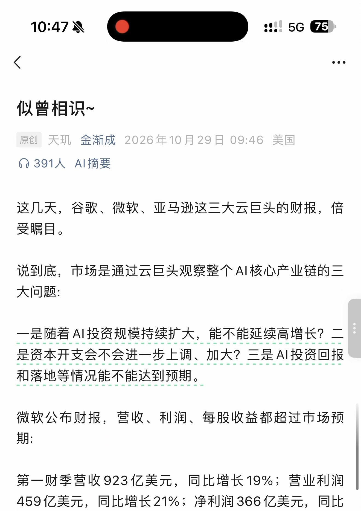
第 2 页 · 原始截图

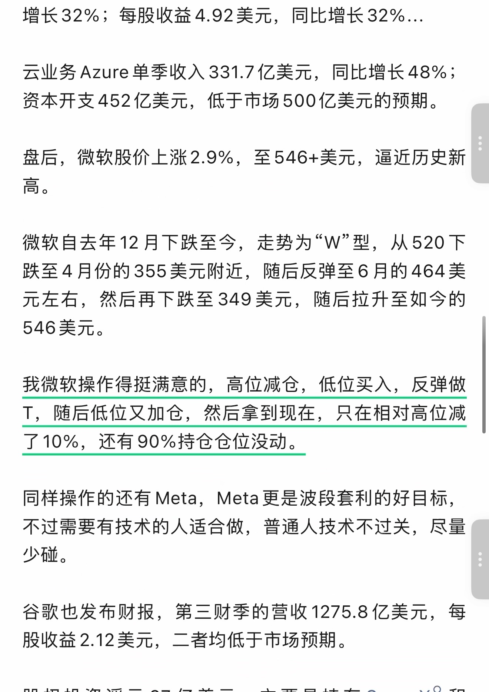
第 3 页 · 原始截图

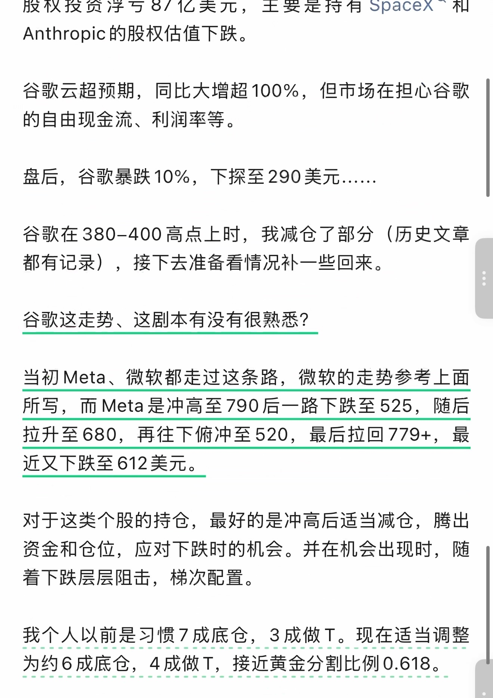
第 4 页 · 原始截图

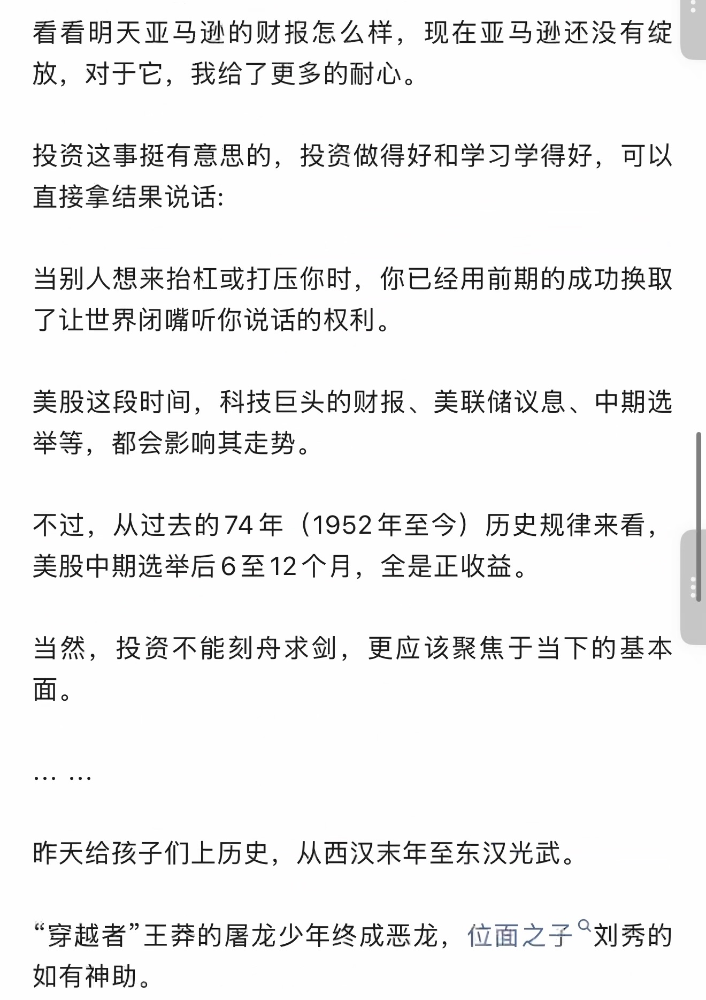
第 5 页 · 原始截图

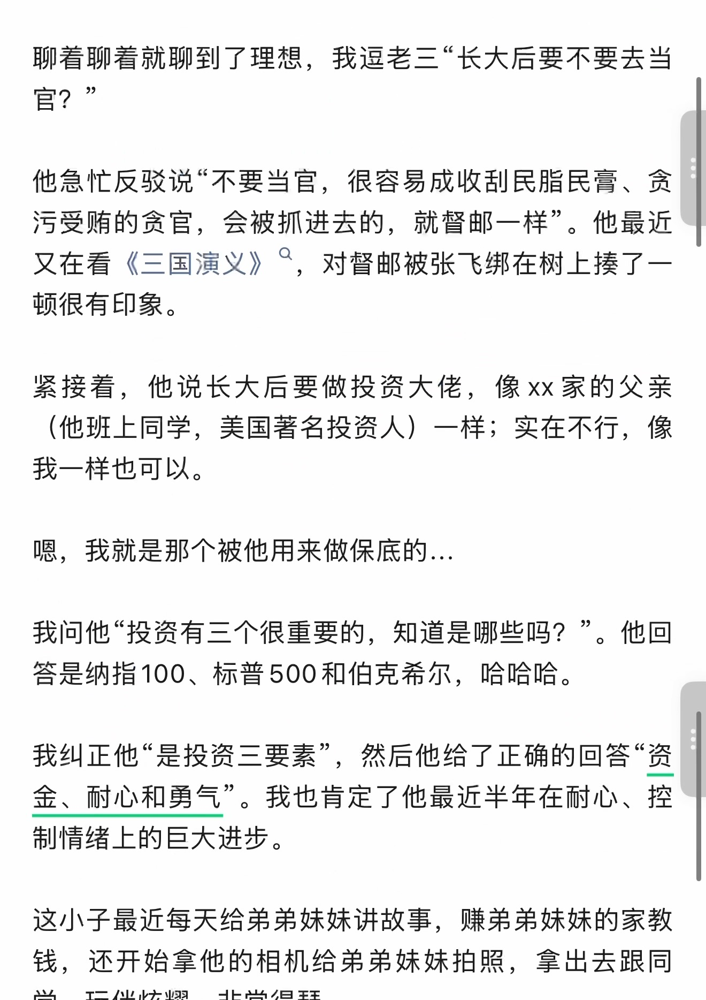
第 6 页 · 原始截图

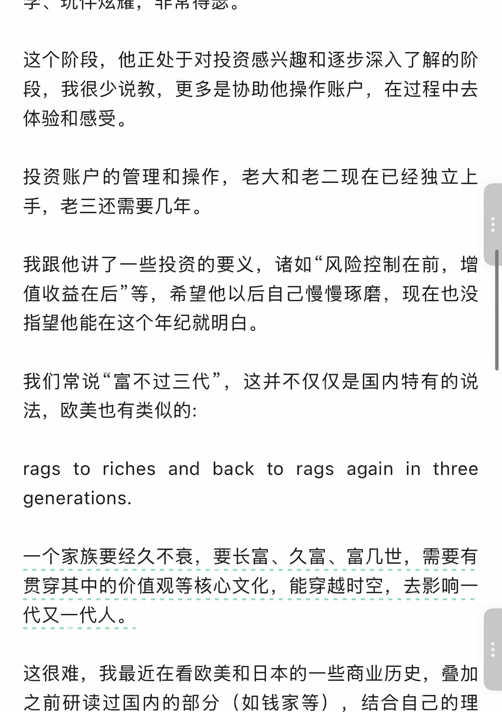
第 7 页 · 原始截图

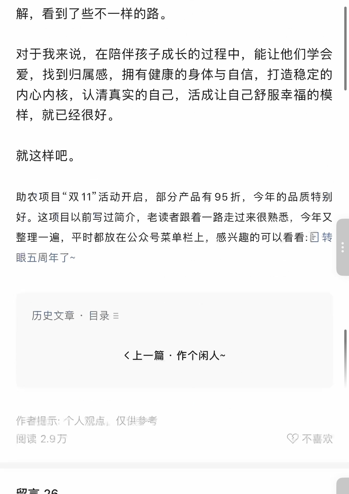
第 8 页 · 原始截图

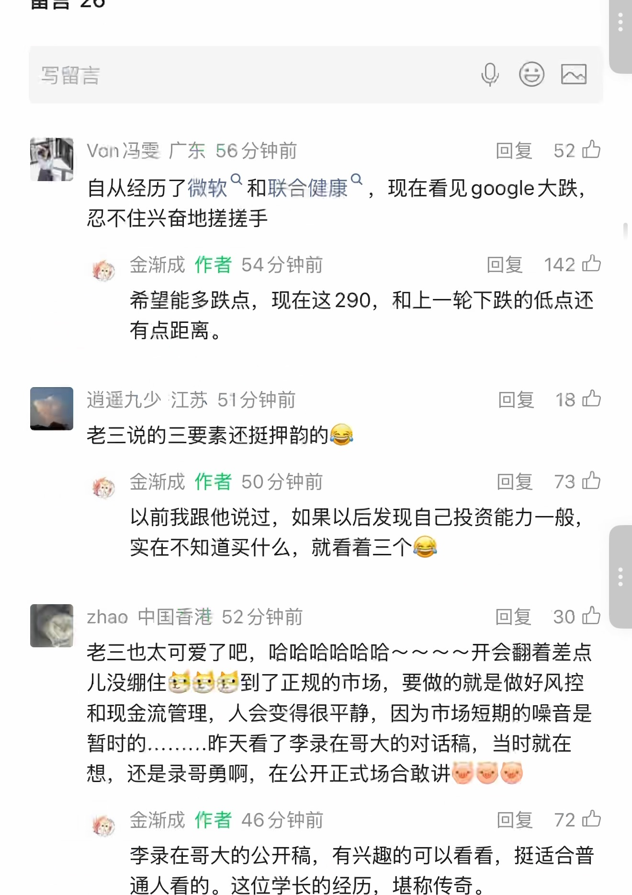
第 9 页 · 原始截图

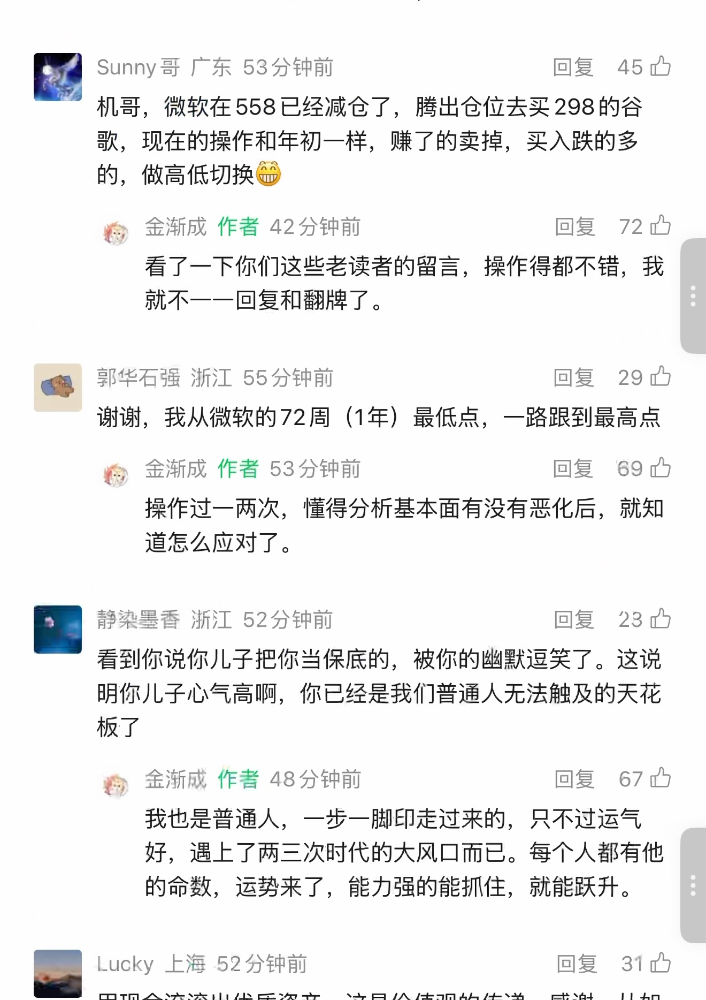
第 10 页 · 原始截图

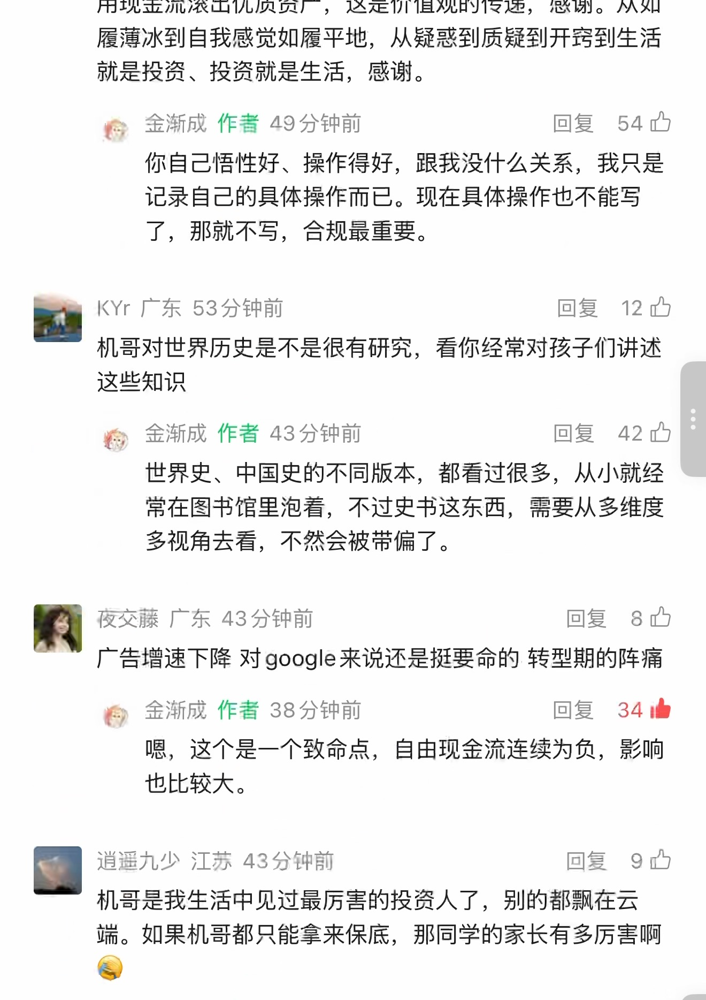
第 11 页 · 原始截图

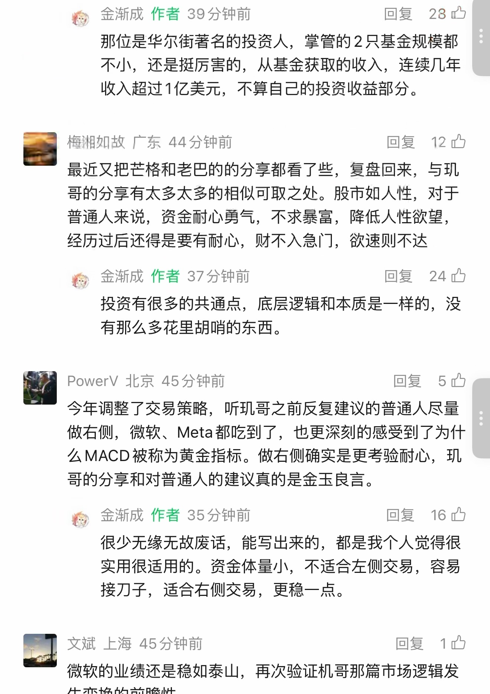
第 12 页 · 原始截图

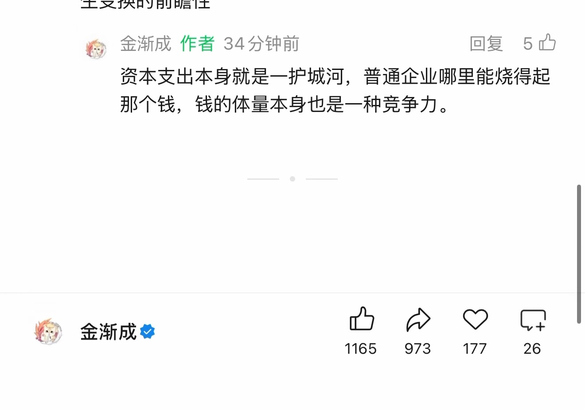
按日期浏览全部来源（同日按条目标识排序）
回到页首